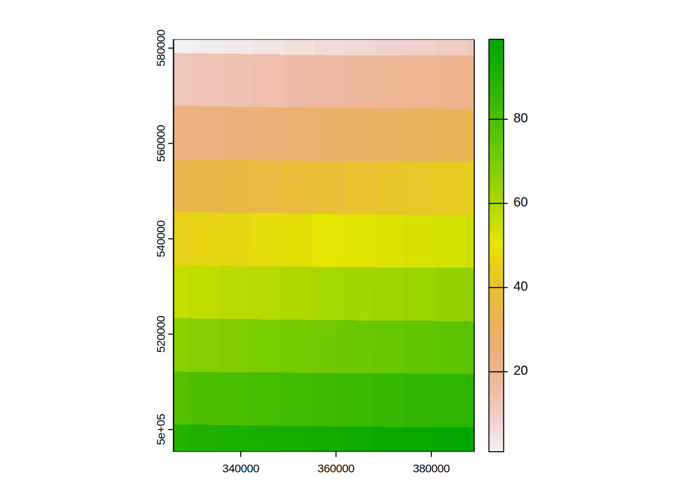

To explore and pre-process the observed data for the Eden catchment.
Alongside the terra package used in the initial GIS processing, two further packages are required. The first, xts, allows for an efficent representation of time series data. The second extra package required is dynatop.
These are attached to the R environment so that there functions are available.
library(terra)
library(xts)
library(dynatop)and remember to move to the eden_data directory e.g.
setwd("../eden_data")The data passed to dynatop when simulating the model is expected to be a xts object (a special kind numeric matrix whose row names give the time) with a constant time step \(\Delta t\). Each column of data should have a unique name which is used to specify the time series when building the model.
Two variables are used as inputs, precipitation and potential evapotranspiration (PET). It is expected that the precipitation and potential evapotranspiration inputs series are given in \(m\) accrued over the proceeding time step. So the data value given at time \(t+\Delta t\) is the total accrued in the interval between time \(t\) and time \(t+\Delta t\).
Since columns in the xts object passed to dynatop which are not used in the model are ignored, so there is no danger is combining observed discharge records in the same object as the input data.
The example contains two data files Eden_Flow.csv and Eden_Precip.nc. The first is a comma seperated text file of flow data, the later a netcdf file containing a time series of spatial rainfall fields.
Looking at the start of Eden_Flow.csv
cat(readLines(file.path(".","unprocessed","Eden_Flow.csv"),5),sep="\n")
#> "Index","Sheepmount_obs"
#> "2020-02-01 00:15:00",189.4168157
#> "2020-02-01 00:30:00",190.9998537
#> "2020-02-01 00:45:00",192.1112028
#> "2020-02-01 01:00:00",192.5883068we see that the Index column gives the time in an unabiguous format recognised by xts. The second column the observed discharges at the Sheepmount gauge as numeric values. We read this in using function avaialbe through the xts package
flow <- as.xts(read.zoo(file.path(".","unprocessed","Eden_Flow.csv"),header=TRUE,sep=",",drop=FALSE))
head(flow)
#> Sheepmount_obs
#> 2020-02-01 00:15:00 189.4168
#> 2020-02-01 00:30:00 190.9999
#> 2020-02-01 00:45:00 192.1112
#> 2020-02-01 01:00:00 192.5883
#> 2020-02-01 01:15:00 192.1112
#> 2020-02-01 01:30:00 191.4758To explore the rainfall data open the file using the terra package
## read in as a multilayered object
precip_brk <- rast(file.path(".","unprocessed","Eden_Precip.nc"))
## show summary
precip_brk
#> class : SpatRaster
#> dimensions : 9, 11, 1392 (nrow, ncol, nlyr)
#> resolution : 0.1, 0.1 (x, y)
#> extent : -3.2, -2.1, 54.3, 55.2 (xmin, xmax, ymin, ymax)
#> coord. ref. : lon/lat WGS 84
#> source : Eden_Precip.nc
#> varname : Precipitation (IMERGv6 final precipitation over preceding 30 minutes)
#> names : Preci~ion_1, Preci~ion_2, Preci~ion_3, Preci~ion_4, Preci~ion_5, Preci~ion_6, ...
#> unit : m, m, m, m, m, m, ...
#> time : 2020-02-01 00:30:00 to 2020-03-01 UTC
## show start of the z values which are the time stamps as character strings
head(time(precip_brk))
#> [1] "2020-02-01 00:30:00 UTC" "2020-02-01 01:00:00 UTC"
#> [3] "2020-02-01 01:30:00 UTC" "2020-02-01 02:00:00 UTC"
#> [5] "2020-02-01 02:30:00 UTC" "2020-02-01 03:00:00 UTC"From the properties of precip_brk we see that:
To address the projection and resolution differences two approaches could be taken
Since the DEM has a higher spatial resolution then the rainfall the second approach is more computationally efficent and is recommended.
To impliment the approach start by creating a raster layer of the same projection and extent as the rainfall feilds but with unique values
rid <- rast(precip_brk[[1]])
rid <- setValues(rid,1:ncell(rid))
rid
#> class : SpatRaster
#> dimensions : 9, 11, 1 (nrow, ncol, nlyr)
#> resolution : 0.1, 0.1 (x, y)
#> extent : -3.2, -2.1, 54.3, 55.2 (xmin, xmax, ymin, ymax)
#> coord. ref. : lon/lat WGS 84
#> source(s) : memory
#> varname : Precipitation (IMERGv6 final precipitation over preceding 30 minutes)
#> name : Precipitation_1
#> min value : 1
#> max value : 99
#> time : 2020-02-01 00:30:00 UTCThen extract the precipitation values to give an xts object where each column is the time series for one value in rid.
precip <- values(precip_brk) # matrix where each row is one cell
## add row names based on unique values in rid to give time series names
rownames(precip) <- paste0("precip_",values(rid))
## get times as characters and convert to R internal time representation (POSIXct)
precip_datetime <- time(precip_brk)
## create the xts object
precip <- xts(t(precip),order.by=precip_datetime)To fix the difference in time step compared with the flow data we resample the precipitation data to a 15 minute timestep. The resample_xts function of dynatop provides a simple method for doing this
## call the resample_precip function
resampled_precip <- resample_xts(precip,900)
## look at what it does (assigned rainfall equally between new steps in same time period)
head(precip[,"precip_48"]) # original data
#> Warning: object timezone ('UTC') is different from system timezone ('')
#> precip_48
#> 2020-02-01 00:30:00 0.0000000000
#> 2020-02-01 01:00:00 0.0001677525
#> 2020-02-01 01:30:00 0.0000000000
#> 2020-02-01 02:00:00 0.0000000000
#> 2020-02-01 02:30:00 0.0000000000
#> 2020-02-01 03:00:00 0.0000000000
head(resampled_precip[,"precip_48"]) # resampled data - see how they sum to the original values
#> Warning: object timezone ('UTC') is different from system timezone ('')
#> precip_48
#> 2020-02-01 00:15:00 0.000000e+00
#> 2020-02-01 00:30:00 0.000000e+00
#> 2020-02-01 00:45:00 8.387624e-05
#> 2020-02-01 01:00:00 8.387624e-05
#> 2020-02-01 01:15:00 0.000000e+00
#> 2020-02-01 01:30:00 0.000000e+00To assign the DEM cells to rainfall series reproject the raster layer of unique rainfall series numbers (rid) to match the projection and resolution of the DEM using nearest neighbours, then save this for later use.
## load the dem
eden <- rast(file.path(".","processed","eden.tif"))
## call the resample_precip function
reproj_rid <- project(rid,eden,method="near")
## A plot for visualisation
plot(reproj_rid)
## save
writeRaster(reproj_rid,file.path(".","processed","precip_id.tif"),overwrite=TRUE)If available spatial Potential Evapotranspiration time series can be handled in exactly the same way as the rainfall. However if there is only a single series generatation of the map of id values can be avoided. A simple sinusoidal PET series can be generated using the evap_est function in dynatop
## use a maximum of 3 mm/day - output in meters
pet <- evap_est(index(flow), eMin = 0, eMax = 0.003)
names(pet) <- "pet" # ensure series has a nameThe xts package has a convient functions for merging xts objects by the time. We will save this as an R object for later use
obs <- merge(flow,resampled_precip,pet,all=FALSE) ## merge by time stamp
saveRDS(obs,file.path(".","processed","obs.rds"))WARNING dynatop does not allow for missing data. Any missing values must be replaced during the pre-processing